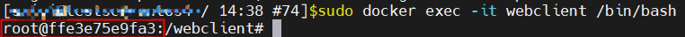
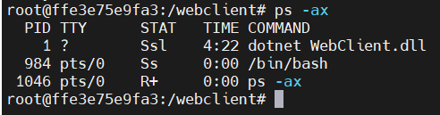

docker
Docker 属于 Linux 容器的一种封装，提供简单易用的容器使用接口。它是目前最流行的 Linux 容器解决方案。 Docker 将应用程序与该程序的依赖，打包在一个文件里面。运行这个文件，就会生成一个虚拟容器。程序在这个虚拟容器里运行，就好像在真实的物理机上运行一样。有了 Docker，就不用担心环境问题。
基本概念
- image-镜像 Docker 把应用程序及其依赖，打包在 image 文件里面。只有通过这个文件，才能生成 Docker 容器。image 文件可以看作是容器的模板。Docker 根据 image 文件生成容器的实例。同一个 image 文件，可以生成多个同时运行的容器实例。
- container-容器 image 文件生成的容器实例，本身也是一个文件，称为容器文件。也就是说，一旦容器生成，就会同时存在两个文件： image 文件和容器文件。而且关闭容器并不会删除容器文件，只是容器停止运行而已。
- Dockerfile
是一个文本文件，用来配置 image。Docker 根据 该文件生成二进制的 image 文件。
Dockerfile 说明：
- FROM: 来源镜像
- LABLE: 标签
- RUN: RUN命令在 image 文件的构建阶段执行，执行结果都会打包进入 image 文件；CMD命令则是在容器启动后执行。另外，一个 Dockerfile 可以包含多个RUN命令，但是只能有一个CMD命令。
- CMD:指令用来运行image中的软件，并可以带任何参数。
- EXPOSE:指令指示容器侦听连接的端口
- ENV:
- ADD or COPY:
- ENTRYPOINT:主要用来设置image的入口命令
- VOLUME：
- USER：
- WORKDIR：指定接下来的工作路径，为了清晰和可靠，您应该始终为您的 WORKDIR 使用绝对路径
- ONBUILD：
常用命令
1. 列出所有container文件
docker ps
docker container ls
| CONTAINER ID | IMAGE | COMMAND | PORTS | NAMES |
|---|---|---|---|---|
| 容器ID | 镜像名 | 命令 | 端口 | 容器名 |
2. 列出所有image文件
docker image ls
3. –format允许您使用Go模板格式化输出。例如，仅打印容器的名称和状态，包括要运行的标题：
docker container ls --format 'table {{.Names}}\t{{.Status}}'
4. exec Run a command in a running container
#在webclient容器中运行交互式bash
docker exec -it webclient /bin/bash
ps -ax
运行上述命令会进入容器里面的shell，用户是root。如图：

其中ffe3e75e9fa3是webclient容器的ID。
使用ps -ax可以显示容器里面正在运行的程序

TTY ?表示与终端无关的进程
获取信息
- 进入容器内部
docker exec -it webclient /bin/bash
- 执行docker exec命令
#获取容器的hostname
docker exec webclient hostname
#获取容器ip地址
docker exec webclient ip addr
#获取容器环境变量
docker exec webclient env
- 执行docker inspect -f命令
docker inspect -f '{{.NetworkSettings.IPAddress}}' webclient
参考
https://www.ruanyifeng.com/blog/2018/02/docker-tutorial.html